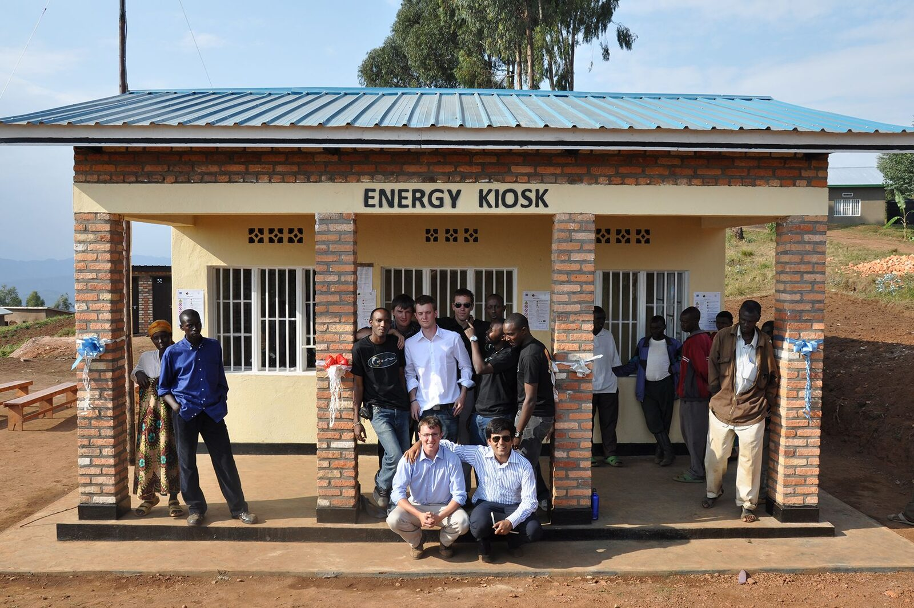
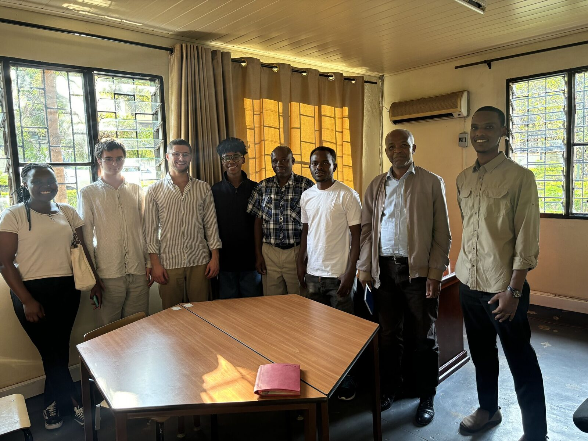

Our mission
We uplift rural Rwandan communities through sustainable, self-sufficient, scalable engineering.
e.quinox is a student-led humanitarian organisation founded at Imperial College London. We bridge the gap between NGOs and industrial practice, fostering collaboration in the fields of sustainable energy and international development.
Through first-hand work with the people of Rwanda, we understand the wants and needs of the locals and how we can work together to advance their lifestyle. This is how we have successfully developed and delivered lasting projects on the ground for over fifteen years.
Every project is engineered at Imperial, tested by students on expedition, and handed over to Rwandan partners who run and maintain it long after our teams fly home.


Featured expedition
The pivot to water.
2024 marked the first expedition where e.quinox moved beyond electricity. Working with the Ministry of Infrastructure and the University of Rwanda, the team brought rainwater harvesting to homes in rural communities — scalable, accessible, transportable.
See the 15-year arc- 0 Years on the ground
- 0 Expeditions to Rwanda
- 0 Spin-off companies founded
- 0 Student chapter, Imperial College
Precise impact figures refreshed each expedition — reach out for the latest.
Our impact
Three companies started here.
Projects that began as Imperial student engineering have grown into operating businesses delivering energy and services across East Africa.

Democratising energy
Bboxx
Born out of an e.quinox project, Bboxx designs and distributes off-grid solar systems across East Africa, providing reliable power to over a million homes.
Listed on the London Stock Exchange.

MeshPower
Solar power solutions

Minazi Consulting
Tackling gender inequality
2026 Expedition
Join the next chapter.
Imperial students: apply to join the 2026 team. Partners: find out how to collaborate on research, manufacturing, or field trials.
Get in touchSupport a project
Power a village.
Direct donations fund equipment, training, and long-term maintenance of e.quinox projects on the ground.
Donate